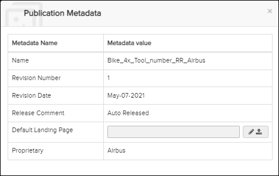
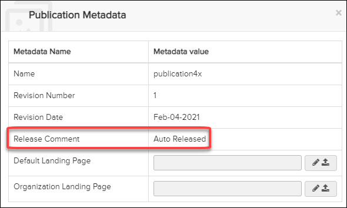
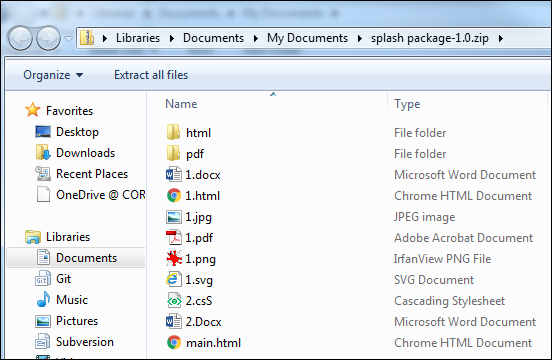

The Publication Metadata dialog is
opened by clicking the  Show Metadata icon in the Table of Content
bar.
Show Metadata icon in the Table of Content
bar.


- Enter a URL in the Default Landing Page field or upload a
splash page ZIP package.
Not applicable for Pinpoint Standalone Light.
Define a Default Landing Page or Organization Landing Page
If the Default Landing Page or Organization Landing Page URL is set, then the landing page for the Pinpoint client will show the specified URL in an iframe. This means that any links will be navigated to inside that frame, the rest of Pinpoint around the frame will stay static. The site that loads from the landing page URL is not able to interact with Pinpoint.
While you are viewing a publication that has a landing page set, you can always return to
the landing page by clicking on the  button in the Content header bar.
button in the Content header bar.
Notice also that you can have a "main" landing page for the application, as described in Configuration Pane.
- In the Default Landing Page or Organization Landing
Page field, click the
 Edit icon.
Edit icon.The field opens for you to enter the URL.
- Enter the URL in the field.
- Click the
 Save button.
Save button.
- In the Default Landing Page or Organization Landing
Page field, click the
Upload icon.
The field opens for you to select a ZIP package to upload.
- Navigate to and select the zipped package you want to upload.
- Click the
Do Upload button.
The uploading starts, and a progress message appears. After the upload is complete, the ZIP package is processed.
- Refresh the library, and click the publication to display the main.html in the landing page. The contents of the main.html (links/graphics) display on the page.
- Click a link to a file to open the file.Note: You can only print HTML and PDF files.
Create a Splash Page ZIP Package
The package consists of the main splash page HTML (main.html) plus additional files, including HTML, PDF, X3D, and graphic files. These files are linked/referenced and can be opened by clicking the link. During upload these files are indexed, meaning that you are able to search for them using Full Text Search. Other types of files, for example, a Word document or XML file, are not indexed or displayed in Pinpoint, but can be downloaded to your computer.
main.html example:
<!DOCTYPE HTML>
<html>
<head>
<link rel="stylesheet" type="text/css" href="1.css"/>
<meta http-equiv="Content-Type" content="text/html; charset=UTF-8" />
<title>Splash Page</title>
<meta name="description" content="Splash Page" />
<link rel="stylesheet" type="text/css" href="2.css"/>
<style> .link-springgreen { color: springgreen; }</style>
</head>
<body style="overflow-y: hidden" >
<div>
<div class="center">
<a href="1.html" class="link-red">HTML 1</a> <br>
<A href="html/2.html" class="link-springgreen">HTML 2~</A><br>
<a href="html/3/3.html">HTML 3</a><br>
<a href="html/4.html">HTML 4 - ignore case</a><br>
<a href="1.pdf">PDF 1</a><br>
<a href="pdf/2.pdf">PDF 2</a><br>
<a href="pdf/3.pdf">PDF 3 - large</a><br>
<a href="pdf/4level/4.pdf">PDF 4 - multiple levels</a><br>
<a href="pdf/4level/5.pdf">PDF 5 - ignore case</a><br>
<a href="1.jpg">JPG 1</a><br>
<a href="1.png">PNG 1</a><br>
<a href="1.docx">Word 1</a><br>
<a href="2.docx">Word 2 - ignore case</a><br>
<a href="1.SvG">SVG 1 - ignore case</a><br>
<img src="1.jpg" alt="JPG 1" width="50%"><br>
<img src="1.png" alt="PNG 1" width="450px"><br>
<img src="1.svg" alt="SVG 1" height="450px"><br>
<img src="html/java.jpg" alt="JPG Jave" height="45%"><br>
</div>
</div>
</body>
</html>
The main.html and the files it references must all be included in the zip you upload.

Splash directory structure example
- The main.html is the entry of processing package. <a> is only supported in main.html.
- HTML, PDF and all kinds of graphics will be displayed in the landing page. Other files types, such as MS Word, will not be displayed, but can be downloaded.
- Hotspot links allow you to open publications directly in the landing page, with the
applicability set. The required parameters are libraryId/libraryName and
publicationId/publicationName.Note: When linking to a library with a multiple folder structure. like CMM, the publicationId is required.
Example (LibraryId/PublicationId):
<span class="landingHotspotLink link-red" data-parameter= "libraryId=4156d97f-1b40-4c24-9554-b06dcfa76361&publicationID= b685357e-3aa7-4c08-82fb-b8d84bb4c4f2&filterAttr=CEC &filterAttrValues=009">A320-TSM Filter</span>Example (LibraryName/PublicationName):
<span class="landingHotspotLink link-springgreen" data-parameter=" libraryName=A320&publicationName=TSM&id=EN23110081080200&filterAttr=CEC &filterAttrValues=009">A320-TSM Document Filter(By Name)</span>You can also specify an "onclick" link.
Example (onclick):
<a href="#" onclick="openLandingHotspotLink('libraryId= 0a33bce8-d684-43da-b358-1404919dd6e1&publicationID= 21291786-0f4d-4d05-9270-4075fed51ca5&id=A350-A-22-3X-XX-0Q001-429A-A')" >A Link to A350-TSM-Document(id+id)</a> - The path to links or Img tags, do not support previous
level.
Example:
<a href="html/3/3.html">HTML 3</a>
(supported)<a href="../html/3/3.html">HTML 3</a>
(not supported) - An external CSS file will append to <style></style> of HTML.
- An external JS file is not supported.